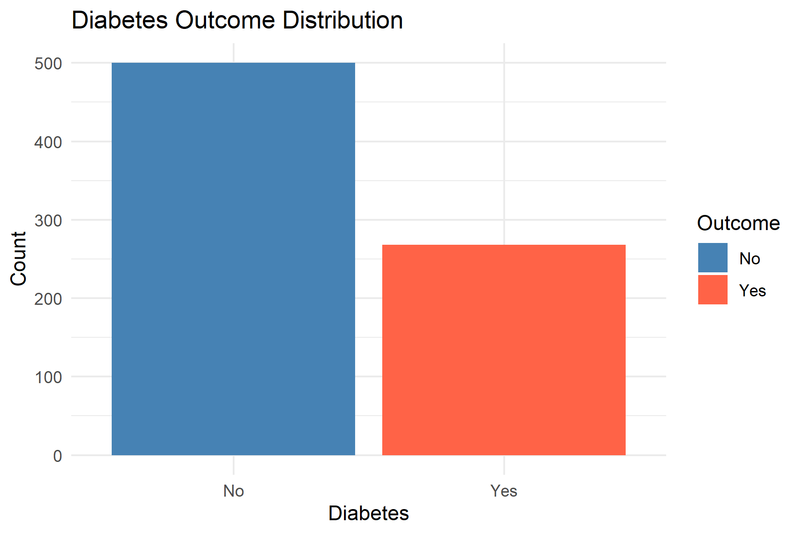
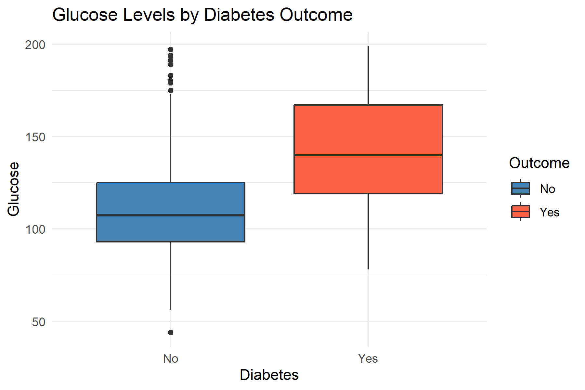
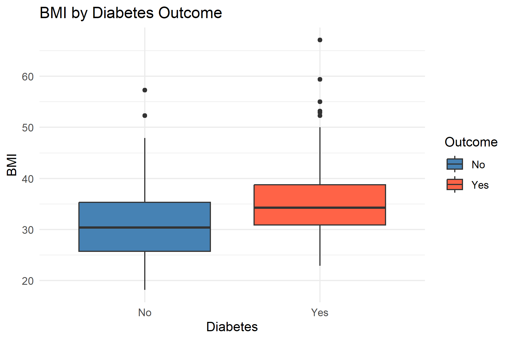
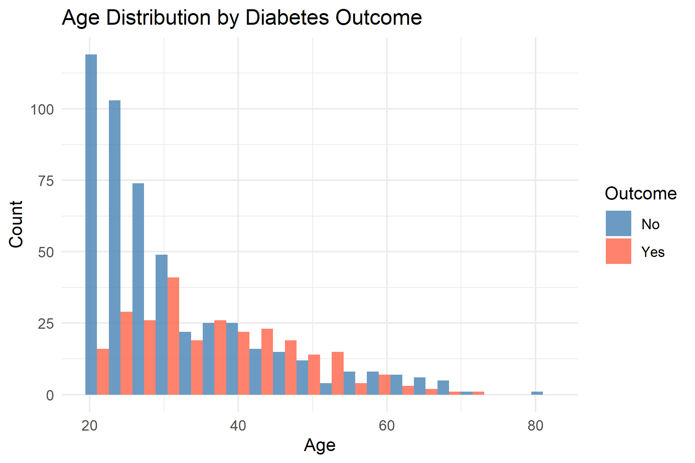
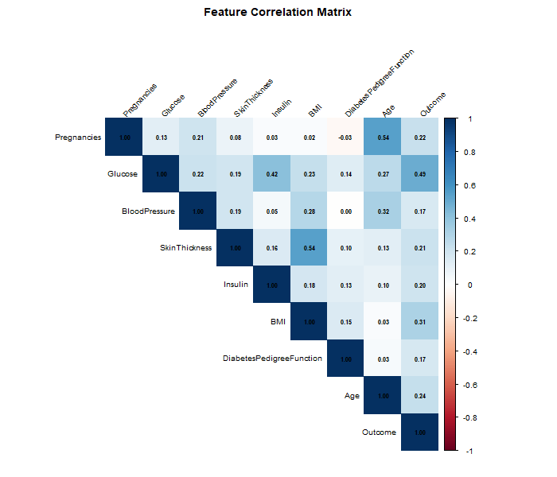
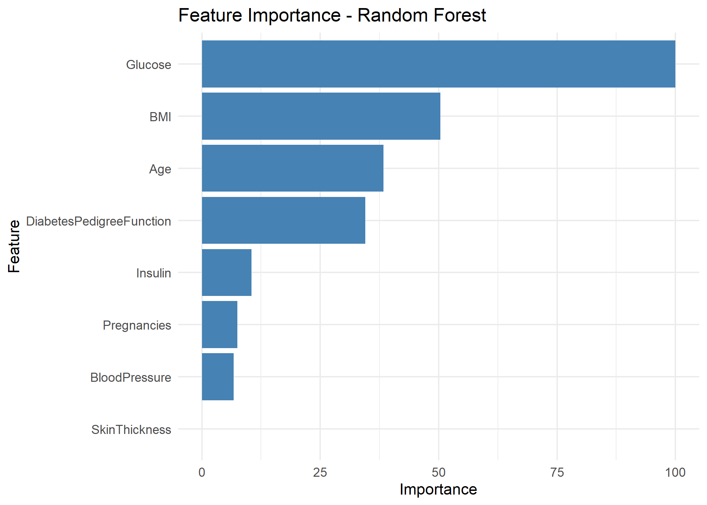

Diabetes Prediction Using Machine Learning
A Comparative Study of Logistic Regression and Random Forest Using R
Student: [Enter Your Name]
University: [Enter Your University]
Academic Machine Learning Project
1. Abstract
Diabetes is a chronic health condition that requires early identification and appropriate medical care. This project investigates the application of machine learning techniques to predict diabetes outcomes using the Pima Indians Diabetes dataset. The dataset contains 768 records and eight predictor variables. Data preprocessing involved handling invalid zero values and applying median imputation. Two classification algorithms, Logistic Regression and Random Forest, were trained using an 80:20 stratified train-test split and five-fold cross-validation. Logistic Regression achieved a test accuracy of 76.47%, while Random Forest achieved 72.55%. Although Random Forest obtained a slightly higher cross-validation ROC score, Logistic Regression performed better on the test dataset. The results demonstrate the potential of machine learning for academic diabetes prediction analysis. However, these models are not intended for clinical diagnosis.
2. Introduction
2.1 Background
Diabetes is a long-term medical condition that affects how the body regulates blood glucose levels. Early identification of individuals who may be at risk is important for supporting timely medical assessment and preventive care.
Machine learning provides techniques for analysing existing data and identifying patterns that can be used to predict outcomes. Classification algorithms can learn from patient-related measurements and predict whether a record belongs to a diabetic or non-diabetic class.
2.2 Problem Statement
The main problem addressed in this project is predicting diabetes outcomes based on medical measurements such as Glucose, Blood Pressure, BMI, Insulin and Age.
2.3 Aim
The aim is to develop and compare two supervised machine learning classification models for diabetes prediction using R.
2.4 Objectives
- Import and understand the diabetes dataset.
- Identify and handle invalid zero values.
- Perform exploratory data analysis.
- Develop Logistic Regression and Random Forest models.
- Evaluate model performance using classification metrics.
- Identify important prediction features.
2.5 Research Question
Which model, Logistic Regression or Random Forest, provides better performance for diabetes prediction using the selected dataset?
3. Data
3.1 Dataset Source
This project uses the Pima Indians Diabetes dataset, a commonly used benchmark dataset for binary diabetes classification. The dataset is associated with the National Institute of Diabetes and Digestive and Kidney Diseases. The original research was published by Smith et al. (1988).
3.2 Dataset Description
| Variable | Description |
|---|---|
| Pregnancies | Number of times pregnant. |
| Glucose | Plasma glucose concentration. |
| BloodPressure | Diastolic blood pressure. |
| SkinThickness | Triceps skin-fold thickness. |
| Insulin | Two-hour serum insulin measurement. |
| BMI | Body Mass Index. |
| DiabetesPedigreeFunction | Diabetes pedigree/family-history function. |
| Age | Age in years. |
| Outcome | 0 = No diabetes, 1 = Diabetes. |
3.3 Outcome Distribution
| Outcome | Records | Percentage |
|---|---|---|
| No Diabetes | 500 | 65.10% |
| Diabetes | 268 | 34.90% |
| Total | 768 | 100% |
3.4 Ethical Considerations
This project uses an existing dataset and does not collect new personal health information. The dataset may not represent all populations. Its redistribution and licensing terms should be checked against the original source from which the CSV file was obtained.
4. Methods
4.1 Programming Language and Packages
The project was developed using R version 4.6.2.
| Package | Purpose |
|---|---|
| caret | Model training, data partitioning and evaluation. |
| randomForest | Random Forest classification. |
| ggplot2 | Data visualisation. |
| corrplot | Correlation heatmap. |
| dplyr | Data manipulation and summaries. |
4.2 Data Import
The CSV dataset was imported into R using read.csv().
Column names were assigned manually. Initial inspection showed
768 observations and nine variables.
4.3 Data Cleaning
The initial dataset contained no explicit missing values. However, zero values in selected medical measurement columns were treated as invalid or missing values.
| Variable | Invalid zero values |
|---|---|
| Glucose | 5 |
| BloodPressure | 35 |
| SkinThickness | 227 |
| Insulin | 374 |
| BMI | 11 |
These zero values were replaced with NA. Median imputation was then applied to replace missing values in each selected column. The Outcome variable was converted into a factor with two levels: No and Yes.
4.4 Exploratory Data Analysis
Exploratory Data Analysis was performed to understand the dataset. The analysis included outcome frequencies, percentages, group means, distributions and correlations between numerical variables. An IQR-based procedure was also used to count potential outliers. The identified outliers were not removed from the dataset.
4.5 Train-Test Split
The dataset was divided into training and testing subsets using
createDataPartition() from the caret package.
An 80:20 stratified split was applied with random seed 42.
| Dataset | Number of records |
|---|---|
| Training | 615 |
| Testing | 153 |
4.6 Logistic Regression
Logistic Regression was implemented using the binomial Generalized Linear Model in R. It estimates the probability of a binary outcome and is commonly used for classification problems.
4.7 Random Forest
Random Forest is an ensemble learning algorithm that combines predictions from multiple decision trees. The model was trained using the randomForest method with tuneLength set to 3.
4.8 Model Validation
Five-fold cross-validation was configured using caret. ROC was used as the model training selection metric. Final predictions were evaluated on the held-out testing dataset using confusion matrices.
5. Results
5.1 Outcome Distribution
The dataset contains 500 non-diabetic records and 268 diabetic records. The non-diabetic class represents 65.10% of the dataset, while the diabetic class represents 34.90%.

5.2 Exploratory Visualisations




5.3 Model Performance Comparison
The following table presents the actual results obtained from the R model execution.
| Metric | Logistic Regression | Random Forest |
|---|---|---|
| Cross-validation ROC | 0.8433 | 0.8522 |
| Test Accuracy | 76.47% | 72.55% |
| Sensitivity | 56.60% | 56.60% |
| Specificity | 87.00% | 81.00% |
| Precision | 69.77% | 61.22% |
| F1 Score | 0.6250 | 0.5882 |
Logistic Regression achieved a higher test accuracy of 76.47%. Random Forest achieved a slightly higher cross-validation ROC score of 0.8522 compared with 0.8433 for Logistic Regression.
5.4 Confusion Matrices
Logistic Regression
| Actual / Predicted | No | Yes |
|---|---|---|
| No | 87 | 13 |
| Yes | 23 | 30 |
Random Forest
| Actual / Predicted | No | Yes |
|---|---|---|
| No | 81 | 19 |
| Yes | 23 | 30 |
Both models correctly identified 30 of the 53 actual diabetic records in the test dataset. Therefore, both achieved a sensitivity of 56.60%. Logistic Regression achieved higher specificity and precision than Random Forest.
5.5 Feature Importance
Random Forest feature importance analysis identified Glucose as the most influential predictor in the fitted model, followed by BMI and Age.

| Feature | Importance |
|---|---|
| Glucose | 100.00 |
| BMI | 50.37 |
| Age | 38.32 |
| DiabetesPedigreeFunction | 34.47 |
| Insulin | 10.46 |
| Pregnancies | 7.47 |
| BloodPressure | 6.73 |
| SkinThickness | 0.00 |
Best model based on test accuracy: Logistic Regression (76.47%).
Note: Cross-validation ROC is reported from the training process. The current script does not calculate a separate ROC-AUC score from the held-out test predictions.
6. Discussion
6.1 Model Performance
Logistic Regression achieved the highest test accuracy of 76.47%, compared with 72.55% for Random Forest. However, Random Forest achieved a slightly higher cross-validation ROC score. This shows that the model with the highest cross-validation ROC does not necessarily have the highest test accuracy.
Both models achieved 56.60% sensitivity. This means that they identified 30 of the 53 diabetic cases in the testing dataset and missed 23 diabetic cases each. This is an important limitation for a health-related prediction task.
6.2 Important Features
Glucose received the highest Random Forest feature importance score, followed by BMI and Age. These variables were especially useful to the fitted Random Forest model when making predictions. Feature importance does not establish a causal relationship.
6.3 Limitations
- Data leakage: Median imputation was performed before splitting the data.
- Class imbalance: The dataset contains more non-diabetic records than diabetic records.
- Moderate sensitivity: Both models identified only 56.60% of diabetic cases in the test set.
- Limited algorithms: Only two classification algorithms were evaluated.
- Dataset generalisation: The dataset may not represent all populations.
- Single split: Results are based on one train-test split rather than repeated independent evaluations.
6.4 ROC Event-Level Consideration
The Outcome factor levels in the current script are ordered as No and Yes. The default caret twoClassSummary function treats the first factor level as the event when calculating ROC. Therefore, the cross-validation ROC calculation should be checked to ensure that the intended positive class is being evaluated. The confusion matrix evaluation explicitly uses Yes as the positive class.
6.5 Real-World Implications
This project demonstrates how machine learning can analyse structured health-related data and identify patterns useful for classification. However, the models require further validation and improvement before any real-world clinical application could be considered.
7. Conclusion and Future Work
This project developed and evaluated two machine learning models for diabetes prediction using the Pima Indians Diabetes dataset. The workflow included data inspection, preprocessing, exploratory analysis, model training and performance evaluation.
Logistic Regression achieved the highest test accuracy of 76.47%, while Random Forest achieved 72.55%. Random Forest obtained a slightly higher cross-validation ROC score. Feature importance analysis identified Glucose, BMI and Age as the top three predictors in the fitted Random Forest model.
Future Improvements
- Perform train-test splitting before median imputation.
- Configure and verify the intended positive class for ROC calculations.
- Apply repeated cross-validation.
- Evaluate the models on an independent dataset.
- Explore additional algorithms such as Support Vector Machines and Gradient Boosting.
- Investigate class imbalance and prediction threshold selection.
- Calculate test-set ROC-AUC using predicted probabilities.
In conclusion, Logistic Regression was the best-performing model according to test accuracy in this experiment. Neither model should be used as a substitute for professional medical diagnosis.
8. Reproducibility
8.1 Project Structure
Diabetes-prediction/ │ ├── data/ │ └── diabetes.csv │ ├── code/ │ ├── 01_import_check.R │ └── 02_model.R │ ├── figures/ │ ├── 01_outcome_distribution.png │ ├── 02_glucose_boxplot.png │ ├── 03_bmi_boxplot.png │ ├── 04_age_distribution.png │ ├── 05_correlation_heatmap.png │ └── 06_feature_importance.png │ ├── Diabetes-prediction.Rproj └── report.html
8.2 Requirements
The project was executed using R version 4.6.2 (2026-10-29 ucrt). The following packages are required:
install.packages(c( "caret", "randomForest", "ggplot2", "corrplot", "dplyr" ))
8.3 How to Run
- Install R and RStudio.
- Open the Diabetes-prediction project folder.
- Ensure the dataset is located inside the data folder.
- Install the required packages.
- Run
code/01_import_check.Rto inspect the dataset. - Run
code/02_model.Rto train and evaluate the models. - Open report.html in a web browser.
8.4 Reproducibility Notes
The modelling script uses random seed 42 for the data partition and model training. This supports reproducibility when the same dataset, software environment and package versions are used.
To record the installed package versions, run the following commands in R:
sessionInfo()
packageVersion("caret")
packageVersion("randomForest")
packageVersion("ggplot2")
packageVersion("corrplot")
packageVersion("dplyr")
9. References
- Smith, J. W., Everhart, J. E., Dickson, W. C., Knowler, W. C., & Johannes, R. S. (1988). Using the ADAP learning algorithm to forecast the onset of diabetes mellitus. Proceedings of the Annual Symposium on Computer Application in Medical Care, 261–265.
- Kuhn, M. (2008). Building predictive models in R using the caret package. Journal of Statistical Software, 28(5), 1–26.
- Liaw, A., & Wiener, M. (2002). Classification and regression by randomForest. R News, 2(3), 18–22.
- Wickham, H. (2016). ggplot2: Elegant Graphics for Data Analysis. Springer.
- R Core Team. (2026). R: A Language and Environment for Statistical Computing. R Foundation for Statistical Computing.
- Wei, T., & Simko, V. R package corrplot: Visualization of a Correlation Matrix. R package documentation.
- Kuhn, M., & contributors. caret: Classification and Regression Training. R package documentation.
For accurate package citations and versions, run
citation("caret"), citation("randomForest"),
citation("ggplot2"), citation("corrplot")
and citation("dplyr") in your R environment.
Also verify the dataset download source and its licensing terms.